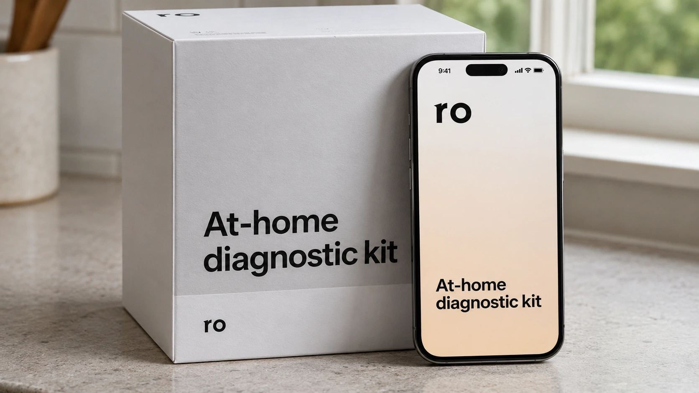

Telehealth Firm Ro Launches AI Research Lab, Seeks Drugmaker Partnerships
Ro plans to study patient outcomes and is discussing pharmaceutical partnerships. The commercial opportunity depends on evidence that goes beyond a large dataset.

Telehealth company Ro said on November 6 that it is launching an artificial intelligence-powered research lab to study patient outcomes, with potential customers extending beyond its own care platform. Reuters reported that Ro is in talks with drug manufacturers about partnerships. The initiative would give the company another way to use information generated through its business, alongside connecting patients with treatment.
Chief Executive Zach Reitano described potential uses for insurers evaluating coverage and manufacturers examining which patients benefit from treatments. Those are proposed applications, not announced results or evidence of signed new commercial contracts. The distinction matters for a company trying to turn the accumulated experience of delivering care into a research product that other organizations will find useful.
A research operation built around an existing care business
Ro’s public Research Lab site already lists work on patient-reported outcomes, telehealth care and obesity treatment. Its publication page separates peer-reviewed papers from conference abstracts. Several papers date from before this announcement. The launch should therefore be understood as a new research initiative around an existing body of work, rather than the first time Ro has studied patients using its services.
That distinction also affects how evidence should be assessed. A conference abstract can describe promising work while providing less methodological detail than a full paper. The existence of either format does not establish that a particular AI model has been validated for clinical decision-making. Ro’s listed research includes an abstract on a large language model-enabled adverse-event triage tool, but a publication listing alone is insufficient to judge its performance.
The company also documents the infrastructure through which some patient information can be generated. Its at-home testing service links sample collection, laboratory processing and results in a medical record. That helps explain the operational connection between digital care and research data. It does not mean every patient uses the same tests or contributes every category of information to the new initiative.
More records do not automatically produce stronger evidence
The Food and Drug Administration distinguishes real-world data from real-world evidence. The former includes routinely collected information about health and care delivery; the latter is clinical evidence derived from analyzing that information. The agency already uses appropriate real-world evidence in regulatory decisions. Its guidance for electronic health records and claims data emphasizes considerations for using those sources to support assessments of effectiveness or safety.
For Ro, that creates a plausible opportunity and a demanding standard. A platform may observe what happens after treatment begins without knowing everything that influenced the outcome. People who remain engaged with a digital service may differ from those who leave. A missing follow-up measurement is not necessarily a successful outcome, and a recorded improvement does not by itself establish which part of care caused it.
AI can help organize records or identify patterns, but those tasks leave the study design question intact. Consider two hypothetical patient groups receiving different treatments. If their starting health, access to care or follow-up differ, an apparent difference in outcomes could reflect those conditions. Adding more records can make an estimate more precise while leaving a systematic bias unresolved. This is an analytical challenge for the proposed business, not a finding that Ro’s studies contain that error.
The practical product needs a defined question, a usable comparison and a defensible treatment of missing information. TTN’s coverage of AI’s operational value makes a related distinction: accelerating a task and demonstrating a useful outcome are separate accomplishments. For research buyers, faster analysis matters only when the resulting evidence is fit for the intended decision.
Privacy controls are part of the research infrastructure
The health-data setting also makes access and reuse consequential. U.S. Department of Health and Human Services guidance describes two HIPAA de-identification methods: expert determination and safe harbor. Where information has been de-identified in accordance with the rule, its use for research is treated differently from the use of identifiable protected health information. That general framework does not establish which route Ro will use for any particular partnership.
The National Institutes of Health separately cautions that information can sometimes support inferences about identity when combined with other sources, even after de-identification. A responsible assessment therefore looks at the dataset and its context, rather than treating removal of a name as the whole privacy analysis. TTN’s discussion of AI access controls explains why permission to read information and governance of later outputs are connected but distinct responsibilities.
The business test is whether Ro can produce findings that insurers, manufacturers or clinicians can evaluate and use. Evidence about treatment persistence, outcomes and costs could be commercially relevant without being interchangeable with a randomized trial. The announcement establishes Ro’s ambition to expand that research activity. Published methods, subsequent findings and disclosed agreements will show how far the ambition develops into an independently assessable business.
Sources and methodology
- Reuters: Ro announcement and partnership discussions
- Ro Research Lab: research program and listed work
- Ro: publication formats and dates
- Ro: existing at-home testing infrastructure
- FDA: definitions and regulatory use of real-world evidence
- FDA: guidance on electronic records and claims data
- HHS: de-identification methods
- HHS: HIPAA and research
- NIH: privacy when sharing research participant data